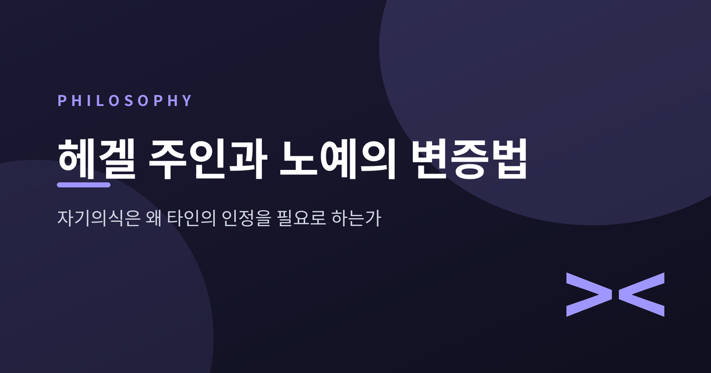
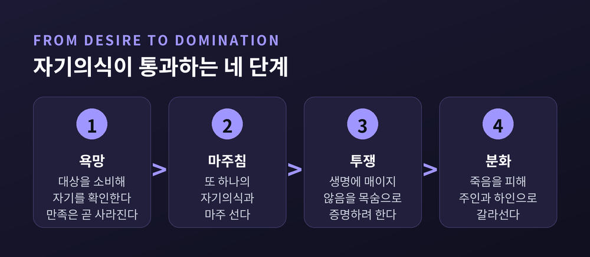
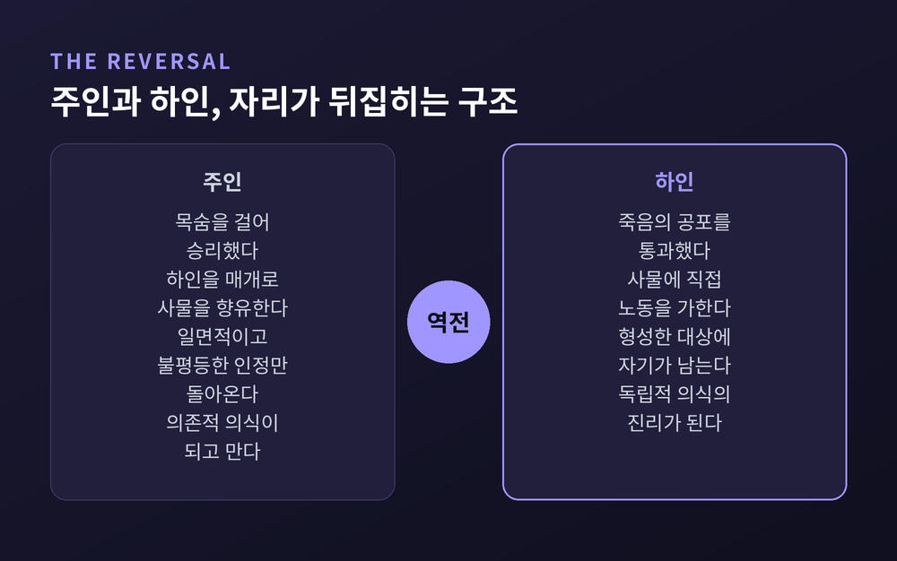
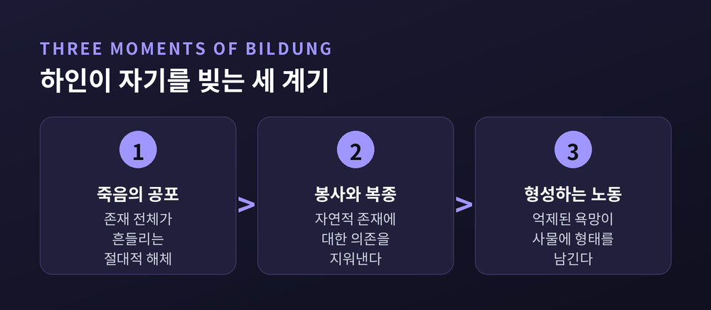
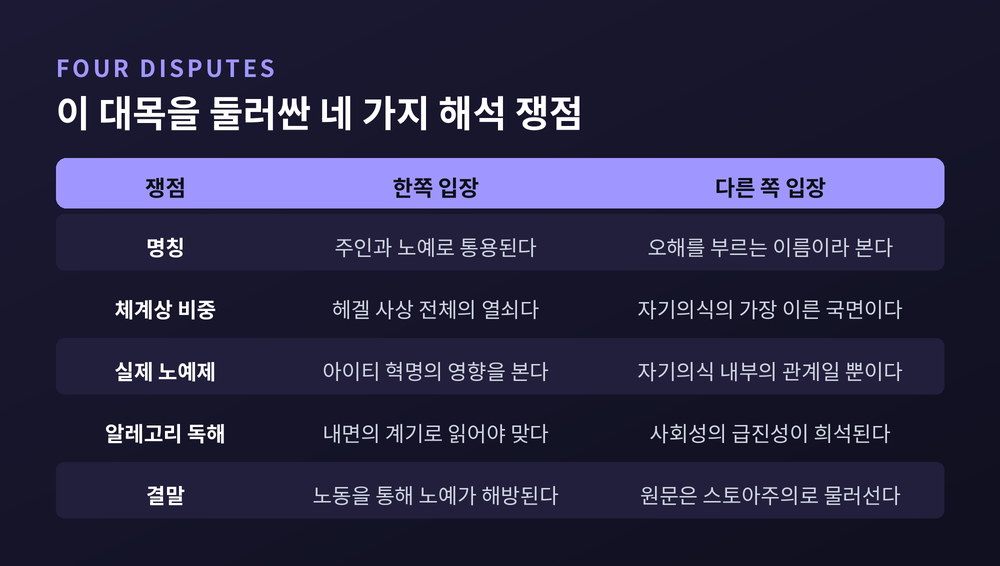
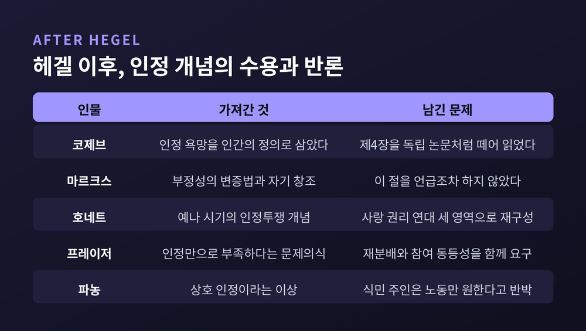

이번 글에서는 헤겔의 주인과 노예의 변증법을 『정신현상학』 원문의 순서대로 따라가 보겠습니다. 인정투쟁이 왜 죽음을 걸어야 하는지, 이긴 쪽이 왜 오히려 잃는지, 그리고 이 짧은 대목이 어떻게 20세기 사상의 중심에 놓이게 되었는지까지 함께 정리했습니다.
세 줄 요약
원 표현은 독일어로 Herrschaft und Knechtschaft입니다. 영어권 표준 번역은 "Lordship and Bondage", 우리말로 옮기면 주인됨과 예속입니다.
널리 쓰이는 "주인과 노예"는 정확한 번역이 아닙니다. 인터넷 철학 백과(IEP)는 이 명칭을 두고 "다소 오해를 부르는 이름"이라고 명시하고, 본문에서는 주인과 하인(lord and bondsman)이라는 표현을 쓴다고 밝힙니다. 헤겔 자신의 용어에 더 가깝다는 이유에서입니다.
크리스 아서는 한 걸음 더 나아갑니다. Knecht의 정확한 번역은 노예가 아니라 하인이며, 헤겔은 베를린 강의에서 der Sklave(노예)와 der Knecht(하인)를 명시적으로 구분했다는 것입니다.
이 구분은 사소해 보이지만 사소하지 않습니다. 이 대목을 곧바로 역사적 노예제나 계급투쟁으로 읽을 것인지가 여기서 갈리기 때문입니다.
자기의식의 첫 모습은 욕망입니다. 대상을 부정하고 소비함으로써 자기를 확인하려는 태도입니다.
문제는 그 확인이 남지 않는다는 데 있습니다. 헤겔의 표현으로 욕망의 만족은 "사라져가는 상태일 뿐이며, 객관성 또는 존립을 결여"합니다. 사과를 먹으면 사과가 사라집니다. 나를 비춰줄 상대가 없어지는 셈입니다.
그래서 자기의식은 다른 것을 필요로 합니다. 스스로 부정을 수행할 줄 아는, 또 하나의 자기의식 말입니다.
여기서 유명한 문장이 나옵니다. 자기의식은 "다른 자기의식에 대해 존재한다는 사실에 의해서만 즉자대자적으로 존재한다"는 것입니다. 헤겔은 이어 자기의식이 "인정받음으로써만 존재한다"고 덧붙입니다.
주의할 점이 하나 있습니다. 이 과정은 처음부터 쌍방향으로 설계돼 있습니다. 헤겔은 "이 과정은 절대적으로 두 자기의식 모두의 이중 과정"이며 "한쪽만의 행위는 무용하다"고 분명히 말합니다. 도달점은 "서로가 서로를 인정하는 자로서 스스로를 인정함"입니다.
그런데 현실에 등장하는 순간 이 순수한 개념은 무너집니다. 한쪽은 인정받기만 하고, 다른 쪽은 인정하기만 하는 비대칭이 생깁니다.

왜 하필 목숨인가. 답은 단순합니다. 자기가 생명이라는 특수한 조건에 매여 있지 않다는 것을 보여줄 방법이 그것밖에 없기 때문입니다.
헤겔의 문장은 단호합니다. "자유는 오직 생명을 거는 것에 의해서만 획득된다."
목숨을 걸지 않은 쪽은 인격으로 인정받을 수는 있습니다. 다만 "독립적 자기의식으로서의 인정의 진리에는 도달하지 못했다"고 헤겔은 적습니다.
그러나 이 시도는 곧바로 자기 발밑을 무너뜨립니다. 상대를 죽이면 인정해 줄 자가 사라집니다. 헤겔은 "죽음에 의한 이 시험은 거기서 나와야 할 진리마저 취소한다"고 씁니다. 죽음은 "독립성 없는 부정"이기 때문입니다.
승자에게 남는 것은 없습니다. 둘은 "사물처럼" 서로를 무심히 놓아버릴 뿐입니다. 이들의 행위는 지양된 것을 보존하는 부정이 아니라 추상적 부정에 그칩니다.
여기서 배우는 것이 하나 있습니다. "생명은 순수 자기의식만큼이나 본질적이다"라는 것. 그래서 관계는 죽음이 아니라 지배로 굳어집니다. 죽음을 덜 두려워한 쪽이 주인이 되고, 더 두려워한 쪽이 하인이 됩니다.
주인은 승리했습니다. 그런데 그 승리의 구조 안에 이미 패배가 들어 있습니다.
주인은 사물을 직접 상대하지 않습니다. "주인은 하인을 매개로 하여 사물과 관계한다"고 헤겔은 씁니다. 하인은 사물을 없애지 못하고 "그저 사물에 노동을 가할" 뿐이며, 주인은 그 결과를 "무제한으로, 유보 없이 향유"합니다.
바로 여기에 결정적인 문장이 놓여 있습니다. "사물의 독립성이라는 측면은 주인이 하인에게 넘겨준다."
넘겨준 것이 실은 전부였습니다.
인정 쪽에서도 사정은 같습니다. 주인이 얻은 것은 "일면적이고 불평등한 인정"입니다. 성공한 바로 그 지점에서 그가 획득한 것은 "독립적 의식이 아니라 의존적 의식"이었습니다.
스탠퍼드 철학백과는 이유를 간명하게 정리합니다. 주인을 인정해 준 자가 "한낱 노예"로, 자율적이고 유능한 판정자로 간주되지 않는 자로 판명되었기 때문입니다. IEP의 표현으로는 "역설적으로 결함 있는 인정"입니다. 지배하는 쪽이 종속된 쪽에서 자기 자신의 모습을 보지 못하는 것이지요.
그래서 헤겔은 역전을 선언합니다. "독립적 의식의 진리는 하인의 의식이다."

여기서 흔한 오해가 하나 생깁니다. 노동만 하면 자유로워진다는 식의 요약입니다. 원문은 그렇게 말하지 않습니다. 헤겔이 요구하는 것은 세 계기가 함께 갖춰지는 일입니다.
첫째는 죽음의 공포입니다. 하인은 이것저것이 두려웠던 것이 아니라 "자기 존재 전체가 두려웠다"는 것입니다. 그 경험에서 그는 "가장 깊은 곳까지 녹아내렸고, 온 섬유가 떨렸으며, 고정되고 확고했던 모든 것이 흔들렸다"고 합니다. 이 "모든 안정성의 절대적 해체"가 곧 절대적 부정성이며, 그것은 자기의식의 구조 자체를 안에서 겪은 사건입니다.
여기서 번역에 관해 한 가지 짚고 갑니다. 널리 인용되는 "죽음이라는 절대적 주인"은 밀러 번역의 표현이고, 베일리 번역은 "지고의 주인"으로 옮깁니다. IEP는 "절대적 복종시키는 자"로 풀어 씁니다. 인용하실 때 판본을 함께 밝히시길 권합니다.
둘째는 봉사와 복종입니다. 하인은 "섬기고 수고하는 가운데" 그 해체를 실제로 수행하며, 봉사를 통해 자연적 존재에 대한 의존을 모든 국면에서 지워냅니다.
셋째가 형성활동으로서의 노동입니다. "노동과 수고를 통해 하인의 이 의식은 자기 자신에게 이른다"는 것이 헤겔의 결론입니다.
욕망과의 대비가 여기서 선명해집니다. 욕망은 대상을 먹어치웁니다. 반면 "노동은 억제되고 저지된 욕망이며, 지연되고 유예된 소멸"입니다. 다시 말해 노동은 사물을 빚고 형태 짓습니다.
그 결과 만들어진 것이 남습니다. 대상에 대한 부정적 관계가 "대상의 형식으로 이행하여, 항구적이고 남아 있는 무엇"이 됩니다. 헤겔은 그 이유를 이렇게 답합니다. 바로 노동하는 자에게만 대상이 독립성을 가지기 때문이라고.
그리고 마지막 반전이 옵니다. 겉으로는 남의 정신과 남의 관념만 개입된 것처럼 보이던 그 노동에서, 하인은 "자기가 자기를 다시 발견함으로써" 자기 자신의 정신을 가지고 또 그것이 됨을 자각합니다. 이것이 도야, 곧 빌둥(Bildung)입니다.

여기까지가 대개 인용되는 부분입니다. 그런데 헤겔은 곧바로 단서를 답니다.
선행하는 절대적 공포가 없다면, 형성활동은 "한낱 허영되고 헛된 자기 정신"만 낳습니다. 헤겔은 여기서 말장난을 씁니다. der eigene Sinn(자기 자신의 정신)은 그대로 Eigensinn(아집, 고집)이 된다는 것입니다. 그것은 "예속의 태도를 벗어나지 못한 종류의 자유"이며, "일정한 범위 안에서만 통하는 영리함일 뿐 보편적 힘에 대한 지배는 아니다"라는 것이 그의 판정입니다.
더 중요한 사실이 있습니다. 하인이 주인을 타도하는 장면은 이 텍스트에 없습니다. 다음 절은 스토아주의이고, 그다음이 회의주의, 그리고 불행한 의식입니다. 의식은 세상을 바꾸는 대신 내면으로 물러섭니다.
IEP도 같은 지점을 지적합니다. 하인의 자기결정은 "남아 있는 비대칭 때문에 제한적이고 불완전하다"는 것입니다. 진짜 해결은 인륜적 삶의 영역에서야 옵니다.
지금 우리는 이 장면을 헤겔 철학의 열쇠처럼 다룹니다. 그러나 학계의 표준적 평가는 훨씬 절제돼 있습니다.
IEP는 이 변증법이 "자기의식의 가장 이른 단계에서만 일어난다"고 못박고, 주인과 하인의 관계를 "일종의 잠정적이고 불완전한 해결"로 규정합니다. 그리고 『법철학』에서 당사자들이 서로를 인격이자 소유자로 인정하는 계약 대목에는 이런 주석이 붙어 있습니다. 주인과 하인의 변증법을 넘어선 유의미한 발전이라는 주석입니다.
스탠퍼드 철학백과 역시 이 장면의 요점을 "우리가 어떻게 자율적 행위자로서 자기의식을 획득하는가에 관한 테제"로 한정한 뒤, 곧바로 제도적 결론으로 넘어갑니다. 진정으로 상호적인 인정을 보장하는 것은 "제도화된 권리 질서" 안에서만 가능하다는 것입니다.
아서의 비판은 더 신랄합니다. 코제브와 이폴리트가 연 실존주의적 독해는 생사투쟁과 그 결말을 과잉 강조했고, 마치 『정신현상학』의 나머지 육백여 쪽이 부록이기라도 한 것처럼 취급했다는 것입니다.
반대 방향의 우려도 있습니다. 로버트 피핀은 이 장을 순전히 내면의 알레고리로만 읽으면 자기의식이 본래적으로 사회적이라는 헤겔의 급진적 주장이 희석된다고 경고합니다.
실제 노예제와의 관계도 논쟁적입니다. 최근 연구자 일부는 이 장이 사회적 실천이나 역사적 과정에 관한 것이 전혀 아니며 자기의식 내부의 관계를 뜻한다고 봅니다. 반대편에는 수전 벅모스가 있습니다. 그는 2000년 여름 『크리티컬 인콰이어리』에 실은 「헤겔과 아이티」에서, 헤겔의 자유 논의와 이 변증법이 아이티 혁명에 대한 그의 인지에서 직접 영향을 받았다고 주장했습니다. 이 논문은 지적 사건으로 평가받으며 큰 논쟁을 불렀고, 그는 2009년 단행본에 새 글을 실어 비판자들에게 답했습니다.

이 대목을 오늘날의 위치로 밀어 올린 사람은 알렉상드르 코제브입니다.
그는 1933년부터 1939년까지 파리 고등연구실천원에서 『정신현상학』을 강의했고, 그 기록이 1947년 『헤겔 독해 입문』으로 묶였습니다. 마르크스의 노동 철학과 하이데거의 죽음을 향한 존재를 결합한 독해였습니다.
코제브의 핵심 주장은 이렇습니다. 인간 욕망의 고유성은 타인의 욕망을 대상으로 삼을 수 있다는 데 있으며, 인간은 인정에 대한 욕망으로 정의된다는 것. 그런데 이 욕망은 자신과 동등한 사람에게서만 채워질 수 있습니다. 주인은 동등하지 않은 노예에게만 인정받으므로 끝내 만족에 이르지 못합니다.
파장은 컸습니다. 라캉의 거울단계 분석은 코제브가 제시한 의식의 상호주관적 매개를 되풀이하고, 보부아르는 『제2의 성』에서 남성과 여성 사이의 주인-노예 관계를 강조하는 독해를 내놓았습니다. 스탠퍼드 철학백과도 코제브의 독해가 사르트르와 라캉에게 강한 영향을 주었다고 적습니다.
다만 사르트르 본인의 결론은 헤겔과 반대편에 가깝습니다. 그에게 개인은 모든 종류의 인정에 의해 물화됩니다. 타인의 긍정조차 주체를 현재 상태에 얼어붙게 만들어 변화 가능성을, 곧 자유를 부정하기 때문입니다.
가장 널리 퍼진 통설이 하나 있습니다. 마르크스의 소외론과 노동 개념이 하인의 노동 분석에서 나왔다는 것입니다.
크리스 아서는 이것을 "마르크스학의 신화"라고 부르며 정면으로 반박합니다.
그가 제시하는 증거는 문헌적입니다. 마르크스는 『1844년 경제학·철학 초고』의 헤겔 변증법 비판에서 주인과 하인 절을 단 한 번도 언급하지 않습니다. 그는 『정신현상학』을 전체로 논하고 마지막 장인 「절대지」를 강조하며 다른 세 절을 상찬하는데, 그 목록에 이 대목은 없습니다.
그러면 신화는 어디서 왔는가. 아서는 한 문서를 지목합니다. 1939년 1월 14일자 잡지 『므쥐르』에 코제브가 지배와 예속 절의 번역을 실으면서, 출처 표기 없이 마르크스의 문장을 제사로 붙였습니다. 헤겔이 노동을 인간의 본질로, 자기를 입증하는 본질로 파악한다는 문장이었습니다. 갓 간행된 『1844년 초고』에서 뽑아낸 것이었습니다.
문제는 그 뒤가 잘려 있다는 점입니다. 마르크스는 곧이어 헤겔이 아는 유일한 노동은 추상적 정신노동뿐이라고 비판합니다. 그런데 『정신현상학』의 하인이 하는 노동은 명백히 물질노동입니다. 아서의 결론은 통렬합니다. 마르크스는 그 분석을 끌어다 쓰지 않았을 뿐 아니라, 그런 대목이 있다는 사실 자체를 잊고 있었다는 것입니다.
그러면 마르크스가 실제로 가져간 것은 무엇인가. 운동하고 산출하는 원리로서의 부정성의 변증법, 그리고 인간의 자기 창조를 대상화와 외화와 그 지양의 과정으로 파악한 관점입니다. 그가 본 노동은 특정 절의 하인의 노동이 아니라 책 전체를 관통하는 정신의 노동이었습니다.
물론 이것이 두 사람 사이에 아무 관계도 없다는 뜻은 아닙니다. 다만 접점은 다른 곳에 있습니다. IEP는 예나 시기 헤겔이 분업을 두고 인간 삶의 파편화와 축소를 낳는다고 본 대목에, "마르크스의 소외론과 비교하라"는 주석을 직접 답니다.
아서가 정리한 두 사람의 차이도 분명합니다. 마르크스는 생산양식의 변화만이 노동자의 자기감을 회복시킨다고 봅니다. 헤겔은 착취적 생산관계 안에서도 노동의 도야 효과만으로 충분하다고 봅니다. 그리고 헤겔은 공포와 봉사를 필요조건으로 못박습니다. 아서는 이 지점을 두고, 헤겔이 아무 근거 없이 모든 사람이 낯선 힘에 대한 예속을 통해 자기 의지가 꺾이는 과정을 거쳐야만 이성적 자유에 이를 수 있다고 가정한다고 비판합니다.
개념의 출발점은 사실 헤겔이 아니라 피히테입니다. 『자연법의 기초』(1796)에서 그는 우리가 다른 주체의 발화나 행위에 의해 촉구받음으로써만 자기 자신과 자기 자율성을 의식할 수 있다고 논증했습니다.
헤겔은 예나 시기에 이 모티프를 확장하며 홉스적 투쟁 관념을 끌어오되, 그것을 자기이익이 아니라 인정을 둘러싼 투쟁으로 바꿉니다. 여기서 흥미로운 차이가 하나 있습니다. 예나의 시나리오는 생사결투가 아니라 소유와 범죄의 이야기입니다. 당신의 소유를 침해하는 사람은 일차적으로 물건을 원하는 것이 아니라, 자신 또한 도덕적 지위를 가진 인격임을 당신에게 상기시키려 한다는 것입니다.
악셀 호네트는 바로 이 예나 시기 헤겔과 조지 허버트 미드를 이어 『인정투쟁』(1995)을 씁니다. 그는 인정을 세 영역으로 나눕니다. 사랑에서 자기신뢰가, 법적 권리에서 자기존중이, 사회적 가치평가에서 자기가치감이 자란다는 구도입니다.
이 틀이 힘을 갖는 지점은 사회 비판입니다. 호네트는 대량실업을 인구의 큰 부분에게서 가치평가를 박탈하는 사회적 병리로 봅니다. 특정 직종이 여성 종사자 비율이 높아졌다는 이유만으로 지위를 잃는 현상도 같은 방식으로 설명됩니다.
반론도 만만치 않습니다. 낸시 프레이저는 정체성 정치가 재분배 문제를 밀어낼 위험을 제기하며, 인정과 재분배가 함께 가야만 정의가 성립한다고 봅니다. 그가 내세우는 기준은 참여 동등성입니다. 재분배가 그 객관적 조건을, 인정이 상호주관적 조건을 확보한다는 것이지요.
더 근본적인 의심도 있습니다. 알튀세르는 인정을 국가가 시민에게 복종이냐 사회적 존재의 상실이냐를 강요하는 이데올로기 기제로 봅니다. 이 계보의 테제는 이렇게 요약됩니다. 우리는 인정받지 못해서 괴로운 것이 아니라, 사회적으로 규정된 특정한 인정의 패턴 안에 갇혀서 괴롭다는 것.
프란츠 파농의 반론은 가장 아픕니다. 『검은 피부, 하얀 가면』에서 그는 식민 상황에서 헤겔적 상호 인정이 작동하지 않는다고 지적합니다. 유명한 각주의 요지는 이렇습니다. 백인 주인은 흑인 노예에게서 인정을 원하지 않는다. 오직 노동만을 원한다.

정리하면 이렇습니다.
헤겔은 자기의식이 혼자서는 완성되지 않는다는 것을 보여주려 했습니다. 나를 나로 만들어 주는 것은 나의 확신이 아니라, 나와 대등한 누군가의 인정입니다. 그래서 상대를 도구로 만들어 얻어낸 인정은 처음부터 값이 없습니다. 낮춰 놓은 상대의 승인은 나를 높여주지 못합니다.
그리고 이 대목이 오래 살아남은 이유는 결론이 아니라 구조에 있다고 저는 생각합니다. 이긴 자리에 의존이 자라고, 진 자리에 자립이 자란다는 구조 말입니다.
다만 헤겔이 모든 답을 준 것은 아닙니다. 그는 예속의 통과를 필연으로 놓았고, 하인의 해방을 실제로 그려 보이지도 않았습니다. 파농이 지적한 대로, 애초에 인정을 원하지 않는 지배자 앞에서 이 도식이 그대로 작동할지도 의문입니다. 이 대목이 헤겔의 열쇠인지 아니면 초기의 한 국면인지조차 아직 합의되지 않았습니다.
그럼에도 남는 물음은 여전히 유효합니다 — 내가 받고 싶은 인정을, 나는 상대에게도 똑같이 건네고 있는가.
이 물음에 편하게 답할 수 있는 사람이 얼마나 될까 싶습니다.